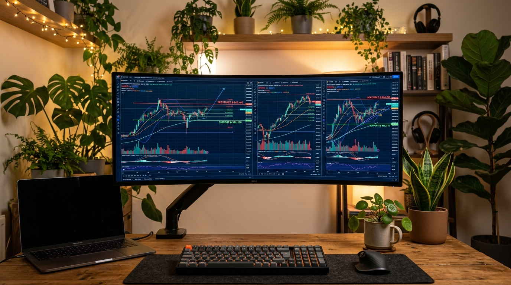
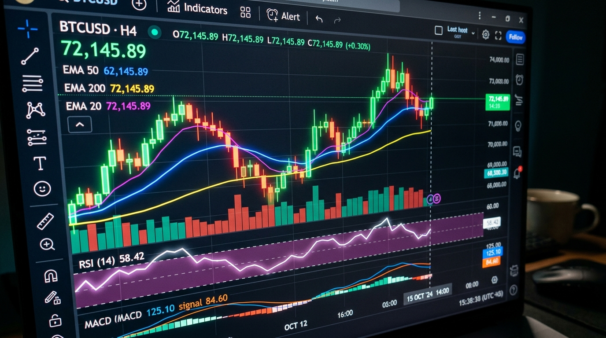

Supercharged
Supercharts

Love in every
#TradingView
100 million traders taking the future into their own hands.

Charts that move markets
Whether you'd like to simply look up the latest stock price, or analyze price patterns with lengthy scripts — we got you covered.

Up to 16 charts per screen
Plus synchronized symbols, timeframes, and even drawings.
Command search
Complete any action in seconds with the global command search.
Spreads
Create your own custom formulas using math operations.
Custom intervals
Any possible interval, including seconds and range bars.
Volume footprint
Time price opportunity
Enables traders to visualize price movements as the profile period progresses, illustrating the concentration of prices at specific levels during a given timeframe.
Session volume
Technical analysis, done right
Our platform comes with hundreds of built-in indicators and strategies, intelligent drawing tools and tools for in-depth market analysis.
- 400+ built-in indicators and strategies
- 100,000+ public indicators
- 110+ smart drawing tools
- Volume profile indicators
- Candlestick patterns recognition
- Multi-timeframe analysis
- Auto chart patterns
Bar Replay to hit rewind on past insights
Watch how pricing data unfolded historically. Rewind markets and review at speed and resolution you desire.
- Real and simulated trading on historical data
- 9 replay speeds
- Autoplay and step-by-step mode
- Drawing objects and indicators for replay analysis
- Synchronized multi-chart replay
- In-depth historical data by the minute and second
- Selectable update intervals
Four seasons in one smart chart
Identify and track recurring seasonal market patterns across multiple instruments over different periods.
Fundamental values... and much more
Compare financial metrics, revenue, and core balances directly inside your candle charting screen.